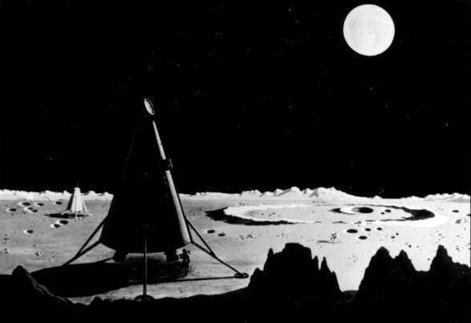
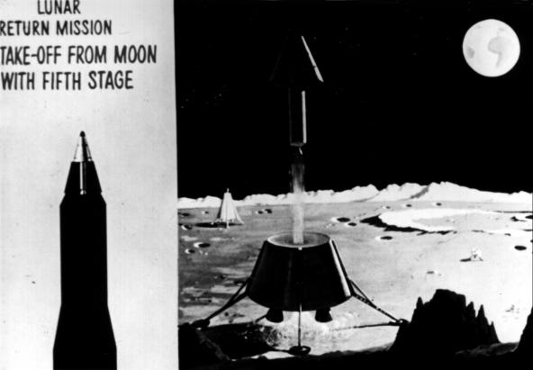
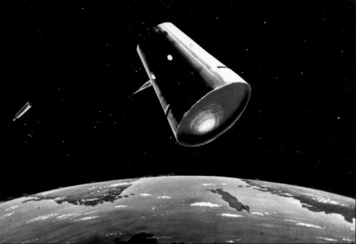
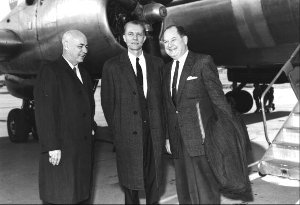

Artist's concepts sketched about February 1959 were used in a presentation by M. W. Rosen and F. C. Schwenk at the Tenth International Astronautical Congress in London, 31 August 1959. Above, astronauts leave the spacecraft to investigate the lunar surface.

The return vehicle takes off from the moon.

The reentry vehicle begins to enter the atmosphere after jettisoning the propulsion unit.
The National Aeronautics and Space Act of 1958, passed by Congress in July of that year, said nothing about the moon or manned space flight. In its declaration of policy and purpose, however, the general objectives were to improve and use aeronautical and space capabilities "for the benefit of all mankind." If achieving international leadership in space meant that this nation would have to fly men to the moon, the Act encouraged that ambition. 4 Clearly NASA, as the nonmilitary agency of the United States, would be responsible for furthering the national interest in space affairs. But the new agency required more than just a charter before the President and the Congress could turn it loose on a task requiring a vast acceleration of activity and a large commitment of national resources.

Space Task Group Director Robert R. Gilruth, left, and Langley Research Director Floyd L. Thompson, center, welcome NASA Administrator T. Keith Glennan to Langley Field, Virginia, for a January 1961 tour.
Much of the preliminary planning for Project Mercury had been done by the National Advisory Committee for Aeronautics (NACA), NASA's predecessor. NASA's first Administrator, T. Keith Glennan, president of Case Institute of Technology (on leave), set about organizing and using the heritage of experience and resources that had carried Mercury from the planning stage into actuality. His deputy, Hugh L. Dryden (former Director of NACA), planned and executed policy decisions during NASA's first few years. Abe Silverstein, who came from NACA's Lewis Flight Propulsion Laboratory in Cleveland, was assigned by Glennan to manage a coordinated program for a stable of rocket boosters to suit a variety of space missions. 5
The White House had approved plans to develop big boosters, but Glennan knew that would not be enough. He wanted organizations that had participated in developing these vehicles, and toward this end he laid plans for the eventual transfer of the California Institute of Technology's Jet Propulsion Laboratory (JPL) and of the Army's Wernher von Braun team (Army Ballistic Missile Agency; ABMA) into the NASA family. In January 1959, Wesley L. Hjornevik, Glennan's assistant, pressed the Administrator to "move in on ABMA in the strongest possible way . . . because it is becoming increasingly clear that we will soon desperately need this or an equivalent competence." Although JPL came into the fold soon after the agency opened for business, a year and a half passed before Glennan persuaded the Eisenhower administration to consign a portion of ABMA and some of its facilities, later named the George C. Marshall Space Flight Center, to NASA. 6
In addition to the oldest NACA laboratory - at Langley Field, Virginia, across Hampton Roads from Norfolk - and the other two NACA laboratories - Ames, at the lower end of San Francisco Bay, and Lewis, in Cleveland - NASA inherited the NACA authorization to build a center for development and operations. Dryden was well aware of the applied research character of Langley, Ames, and Lewis. He was anxious to insulate these former NACA centers from the drastic changes that would come while shifting to actual development in NASA's mission-oriented engineering. Space science, mission operations, and, particularly, manned space flight should, he thought, be centralized in the new facility to be built near Greenbelt, Maryland. To direct Project Mercury, Glennan established the Space Task Group, a semiautonomous field element under Robert R. Gilruth. When the new center was completed, the Mercury team would move to Maryland. * In May 1959, Glennan announced that this new installation would be called the Goddard Space Flight Center in commemoration of Robert H. Goddard, the American rocket pioneer. 7
Besides the NACA personnel, programs, and facilities, NASA acquired, by transfer, ongoing projects from the Army (Explorer), Navy (Vanguard), and Air Force (F-1 engine). 8 These were worthwhile additions to the new agency; to comply with the language and intent of the Space Act, however, NASA had to plan a long-range program that would ensure this country's preeminence in space exploration and applications.
* In May 1959, Glennan also appointed Gilruth Assistant Director for Manned Satellites at Goddard. Harry J. Goett was named Director of the new center in September.
4. Space Act of 1958, pp. 1-2.
5. Forty-fourth Annual Report of the National Advisory Committee for Aeronautics, 1958 (Final Report) (Washington, 1959); Senate Committee on Aeronautical and Space Sciences, Subcommittee on Government Activities, Investigation of Governmental Organization for Space Activities: Hearings, 86th Cong., 1st sess., 1959. Silverstein, interview, Cleveland, 1 May 1964. Cf. "Silverstein Memorial Dinner," tape recording, Thomas O. Paine, master of ceremonies, University Club, Washington, 6 Dec. 1969.
6. T. Keith Glennan to Sen. Lyndon B. Johnson and Rep. John W. McCormick, 21 Oct. 1958; "Army-NASA Agreement," joint Army-NASA press release, 3 Dec. 1958; Wesley L. Hjornevik to Admin., NASA, "Utilization of ABMA," 20 Jan. 1959.
7. Swenson, Grimwood, and Alexander, This New Ocean, p. 113; Alfred Rosenthal, Venture into Space: Early Years of Goddard Space Flight Center, NASA SP-4301 (Washington, 1968), pp. 27-29; Samuel B. Batdorf, memo for file, "Presentation of MIS Program to Dr. Glennan," 14 Oct. 1958; Robert R. Gilruth to Assoc. Dir., Langley, "Space Task Group," 3 Nov. 1958; Robert L. Rosholt, An Administrative History of NASA, 1958–1963, NASA SP-4101 (Washington, 1966), pp. 80-81; Esther C. Goddard and G. Edward Pendray, eds., The Papers of Robert H. Goddard, 3 vols. (New York: McGraw-Hill, 1970).
8. Glennan letters, 21 Oct. 1958; NASA, "Fact Sheet on the Transfer of Certain Functions from Department of Defense to the National Aeronautics and Space Administration," 1 Oct. 1958, as cited in Rosenthal, Venture into Space, pp. 284-85; Swenson, Grimwood, and Alexander, This New Ocean, p. 99.